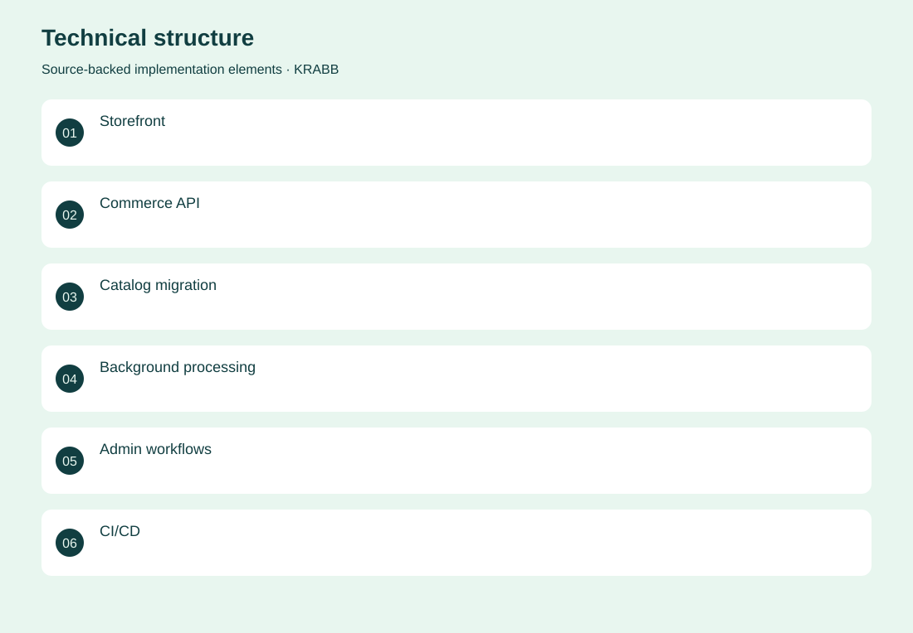
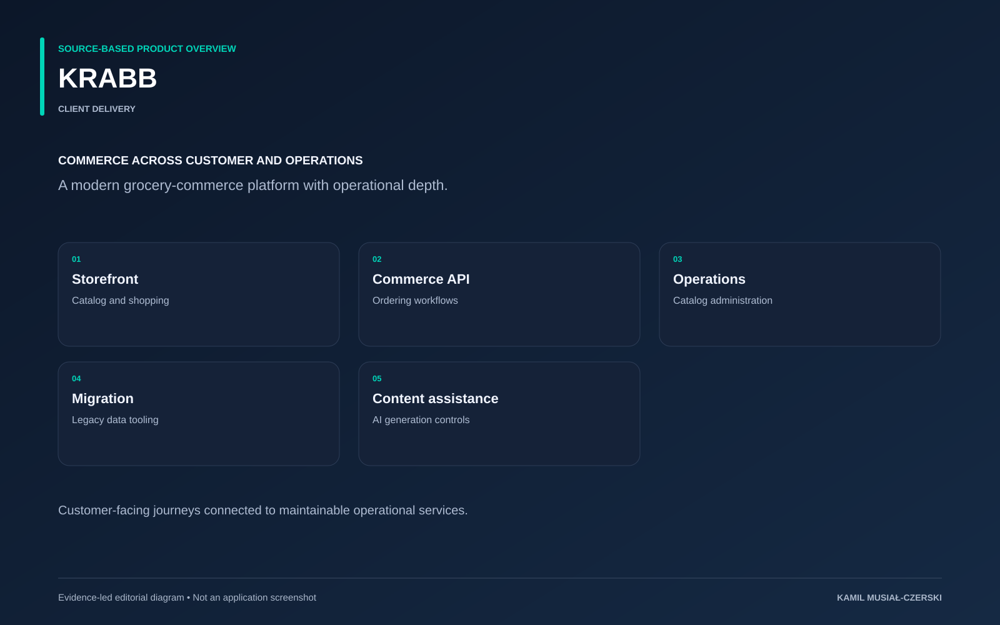

The project
The commerce rebuild separates the customer storefront, operational API and shared data model. Migration tooling carries catalog and legacy commerce data into the new structure, while background services support ongoing operations. Later delivery work tightened availability presentation, product descriptions and AI-output guards, with repository handoffs recording production verification.
The problem
A growing grocery catalog requires consistent shopping flows, operational integrations and maintainable content.
The solution
A Next.js storefront and Fastify API share database contracts, with background processing and deployment workflows.
My contribution
Built storefront and API workflows, catalog migration tooling, operational integrations and guarded AI-content presentation.
AI capabilities
Assisted product-content generation; AI usage controls
Technical structure

Product overview

The portfolio cover is an editorial illustration. No live product screenshot is presented for this project.
Showcase assets
{kind=link}
{kind=link}
Existing product identity. Newly designed marks are portfolio treatments, not claims of official client branding.